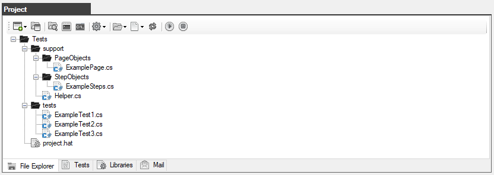
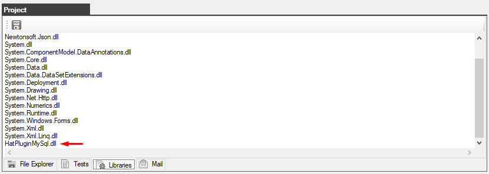

Connecting the HatPluginMySql plugin to the autotest project
1. Launch the browser Hat
2. Create a new project or open an existing project

3. Go to the Libraries tab and enter the name of one file at the end of the list HatPluginMySql.dll

4. Click the "Save" button.
This completes the plug-in connection to the project
Created with the Personal Edition of HelpNDoc: Free EBook and documentation generator